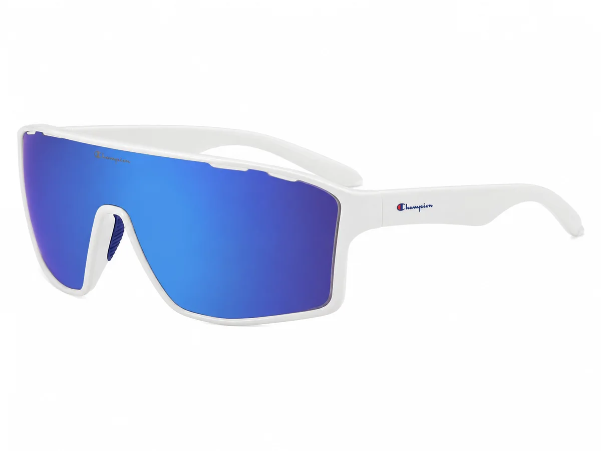
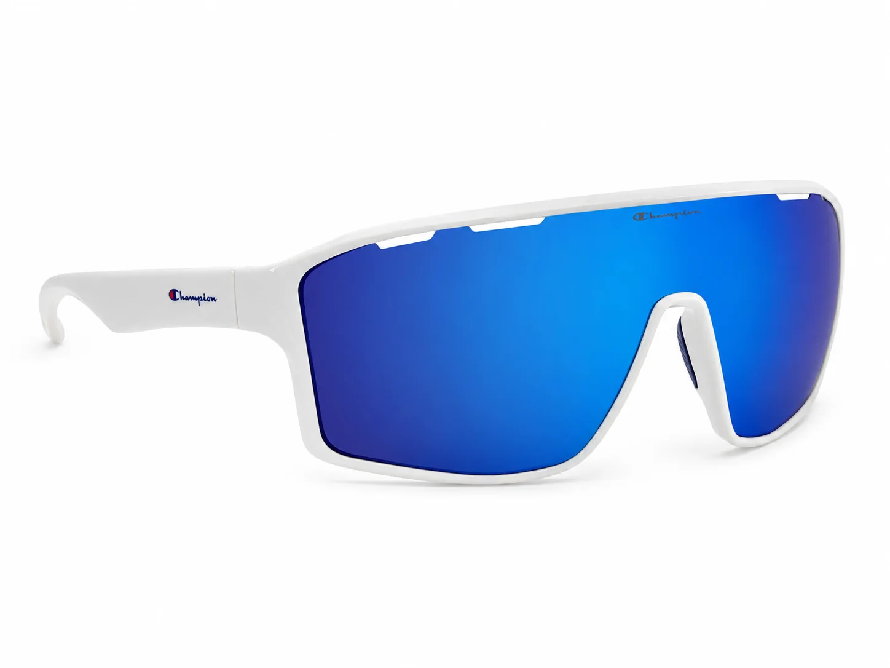
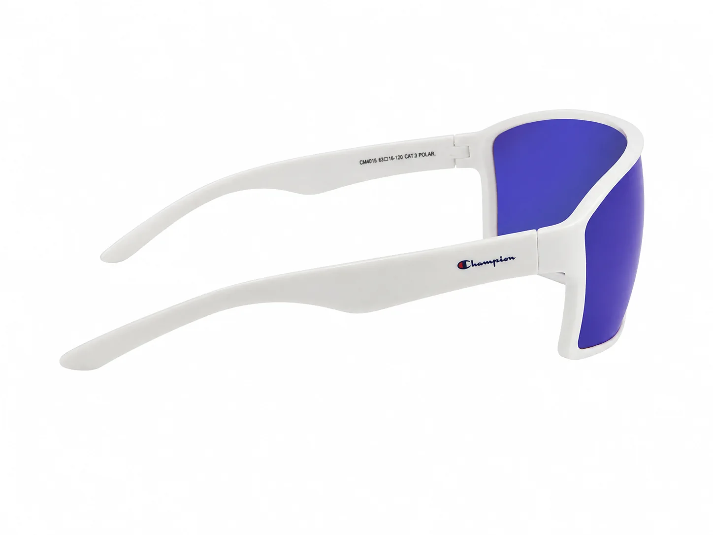

Cómo exhibir lentes de sol Champion en ópticas
Una vitrina clara reduce el esfuerzo de comparación. Ordenar los solares por uso, silueta y contraste ayuda a que el cliente entienda la colección y le da al asesor una ruta natural para recomendar.

La exhibición no necesita explicar todo de una vez. Su primera tarea es crear grupos legibles; la segunda, ofrecer uno o dos contrastes que despierten curiosidad y permitan al asesor iniciar una recomendación.
Ordena primero por uso percibido
Agrupa referencias urbanas de líneas rectangulares, siluetas deportivas envolventes y piezas de presencia alta. Esta organización resulta más útil que separar únicamente por color, porque conecta la forma del producto con la conversación que tendrá el asesor.
Crea un recorrido de menor a mayor impacto
Coloca una solar urbana como entrada, continúa con una forma más dinámica y termina con una pieza que detenga la mirada. El CHS-10 C3, con frente blanco y lente azul espejado, puede funcionar como punto de alto contraste dentro de esa secuencia.

Usa el color para marcar ritmo
Alterna negros, metales y tonos claros para evitar bloques visuales pesados. Si varias referencias tienen lentes espejadas, distribúyelas para que cada una conserve presencia. El espacio entre productos también forma parte de la presentación.
Mantén la ficha comercial cerca
La vitrina atrae; la ficha confirma. El equipo debe poder consultar el modelo, color, forma y las especificaciones verificadas. Si una medida o categoría UV está pendiente, no la completes por intuición: solicita confirmación a Innova.

Rota la historia, no solo los modelos
Una actualización de vitrina puede cambiar el orden y el argumento sin reemplazar todo el surtido. Una semana puedes destacar la transición urbana-deportiva; otra, el contraste entre lentes espejadas y frentes neutros. Esa rotación ayuda al equipo a renovar su discurso y muestra más amplitud de colección.
Usa el CHS-10 C3 como punto focal
Abre su ficha real para revisar imágenes y comparar esta pantalla con otras referencias solares Champion.